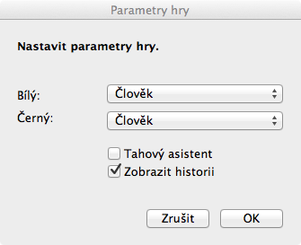

Gotická dáma
Ovládání programu
Jedná se o standardní aplikaci pro operační systém Mac OS X, takže ovládání je velice podobné jiným aplikacím. V hlavním menu aplikace je možnost vyvolat panel předvoleb, kde je možno kdykoliv během hry měnit nastavení hráčů a chování aplikace.

Volbou Tahový asistent povolíme napovídání polí, kam můžeme s vybranou figurou táhnout. Zobrazení historie umožní zobrazit, případně skrýt pomocné okno s historií tahů.
Dále je menu Hra, kde se nachází ovládání samotné hry. Obsahuje volby:
- Nová… Otevře dialog pro nastavení nové hry. Možno vyvolat též klávesouvou zkratkou ⌘N.
- Otevřít… Umožní vybrat a načíst uloženo hru. Možno vyvolat též klávesouvou zkratkou ⌘O.
- Uložit… Pomocí této funkce můžete uložit rozehranou hru na disk. Možno vyvolat též klávesouvou zkratkou ⌘S.
- Uložit jako… Jako v předešlém případě, ale umožní Vám pokaždé zvolit soubor, do kterého se má hra uložit.
- Tah zpět… Vrátí hru o jeden tah zpět. Možno vyvolat též klávesouvou zkratkou ⌘Z.
- Tah vpřed… Posune hru o jeden tah vpřed. Možno vyvolat též klávesouvou zkratkou ⇧⌘Z.
- Pokračovat ve hře Opět spustí pozastavenou hru.
- Nápověda nejlepšího tahu Pokud je na tahu člověk, zobrazí na tip na následující tah.
Další menu Okno a Nápověda jsou standardní menu u Mac aplikací a uživatel systému Mac OS X je jistě již důvěrně zná. Není tedy třeba je podrobně popisovat.
Zpět na úvod